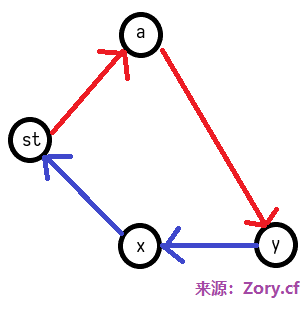
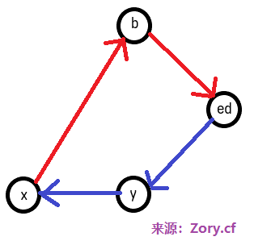
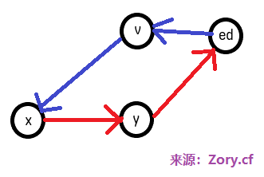
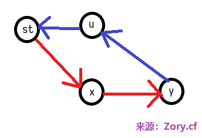
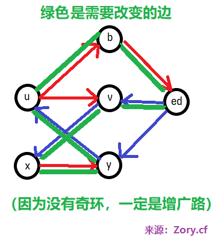
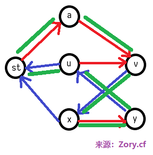

二分图
顶点可以分类两个集合X和Y，所有的边关联的两个顶点，恰好一个属于集合X，另一个属于集合Y。
最大二分匹配
（下文为早期所写，不保证正确性）
例题
Caioj1122
匈牙利算法：
ask[i]==true，表示这一轮中母牛i有匹配成功的可能性（每到一只新公牛t就要重置）
我们每次尽量让公牛x（不一定是t）配对，那么当询问到母牛i时
ask[i]==true
情况一、match[i]==0，直接成功
情况二、match[i]>0，之前有一只公牛y=match[i]，
尝试让y找其他母牛去匹配，从而调整搭配
在这过程中，这个公牛y以及之后为了搞定公牛y所需要调整的其他公牛y2、y3
都不能占用母牛i（先宣告主权，ask[i]=false），从而避免死循环，这是一个潜在的贪心，
递归回来之后假如一切顺利，则x也成功
假如情况任意一个成功，匹配match[i]=x
但无论如何，ask[i]=false（别急着问为什么，看下去先）
ask[i]==false（看文字前再明确一遍，配对公牛t时曾经询问过i）
情况一、之前匹配成功了，然鹅，仔细想想，我们的递归结构中，只要有一次成功，
就全部成功了，那么x的配对就不会找到母牛i了，所里本情况不存在。
情况二、之前匹配也就是调整失败，那么在同样情况下（ask没变也就是公牛t没变）
这一次必然也会失败，所以这时应当退出，达到剪枝省时的目的
总而言之，当ask[i]==false时，退出即可
决策单调性（好像语言组织得不是特别好）：
为什么当情况二调整公牛y后成功则母牛i属于x，而不是x自己去再往后尝试？
好吧严格而言这并不是一个证明：目前先凑合着，假如以后发生状况需要调整x时再调整
疑点：“现在调整”和“满足现状”面对的状况可能不一样？
解答：这应该是可行最大二分图匹配方案不唯一的一种体现吧，
反正目前而言我们的目的是求出最大匹配数，所以具体方案没有关系
加速：
可以考虑运用邻接表（这条边通往的地方）和时间戳（这样就不用每次初始化ask数组）
邻接表：话说这可是我们学最短路后立刻就学了的东西，适用于稀疏图
时间戳：ask用int存储，如果比“当前匹配公牛编号t”小就是过时的，相当于false
改造：
解决多重二分图匹配问题
Optimal Milking
练习：
二分图提高篇
二分图增广路的另一种理解：
建立一个有向图，非匹配边看做从左向右，匹配边看做从右向左
那么左边的x到右边的y存在增广路，相当于存在一条路径
二分图最大匹配的必经边和可行边
先从特殊的完备匹配开始考虑
可以先任意找到一组匹配方案
必经边：【当前是匹配边】并且【删除后不存在从x到y的路径】
因为匹配边意味着从y到x，现在又存在从x到y的路径
那么就以为着 x和y属于同一个强连通分量
所以必经边的判定条件可以改为：【当前是匹配边】并且【不同强连通分量中】
可行边：【当前是匹配边】或者【把x到y看做可行边后，存在连接原本另外两个匹配点的路径】
因为我们刚才的建边方式，也就是另外两个原本的点之间有路径，同时原本就有匹配边把他们和x、y连接
所以说条件可以改成：【当前是匹配边】或者【同一个强连通分量中】
不过，如果没有完备匹配呢？
对于两种边的第二个条件，不一定非要增广x到y，而可以是到z
所以就会出问题（还傻傻地以为没有问题）
怎么解决呢？接下来的内容很好懂
但是我认为是神仙想出来的东西……太nb了，我也只有帮忙吹水的份
分情况去解决问题
对于必经边的判定，不能只是x到y了，而是不能有任何新增广路
所以我们要判断，删除之后是否存在其他增广路
不过，这个增广路一定是连接x和y中某一个的，否则与此次操作无关，影响了最大匹配的“最大”
如果我们考虑用网络流解决二分图最大匹配问题，
剩下的残余网络能够很清晰地得出具体的有向图方案
因为对于匹配边，流量过去了，那么有效边是其反向弧，
非匹配边则不变，恰好与我们提出的有向图表示法相一致
加入源点和汇点，那么匹配点也能很清晰地表示出来了
然后我们可以用这个图去考虑完善判断条件
图示：
a和b是非匹配点，u和v是匹配边
蓝色是匹配边，红色是非匹配边
然后绿色是在强连通分量中的部分
先解决必经边的判定，也就是断开原本的边，分为x和y去找两种情况


对于可行边的判定，原本是非匹配边
可能x和y中只有一个匹配点，分为x和y去找两种情况


也可能两个都是匹配点


综上所述，可以把原本的方案，判断强连通部分不变，
对象从简单有向图变为网络流的残余网络（忽略流量为0的边）
例题：舞动的夜晚